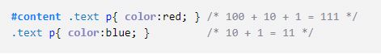

В этой статье я постараюсь понятно объяснить что такое CSS селекторы и как использовать каждый из них. Здесь описаны все селекторы, которые нужно знать при работе с CSS.
Вступление
CSS селектор
— это часть правила, с помощью которого можно выбирать HTML элементы в документе. Далее выбранный элемент можно стилизовать с помощью CSS стилей.
Под словом «Селектор» подразумевается один
CSS селектор
, например
div, #content, :hover
Под словом «CSS правило» подразумевается комбинация селекторов, например
#content .text p
CSS Приоритеты и каскадность
CSS — это каскадные таблицы стилей (Cascading Style Sheets).Каскадность — это главный принцип css — это приоритет одних правил/стилей над другими. Это когда одни стили перебивают другие.
При вычислении приоритета браузер определяет «Вес» каждого CSS правила, который складывается из веса отдельных селекторов этого правила. Стили менее весомых правил перебиваются стилями более весомых. В результате элемент получает собранные стили от самых «весомых» правил. Все это и есть каскадность.
Таблица веса (числа) для каждого селектора:

Из правил с одинаковым весом выбираются те, которые ближе к концу HTML страницы (ниже в коде).
Пример подсчета веса (вес представляет из себя число):
Тег p внутри элемента .text получит стиль color:red; , а не color:blue; , потому что число 111 больше чем 11 .
Считать приоритеты никогда не нужно на практике, но нужно понимать как это работают и какой из селекторов важнее остальных.